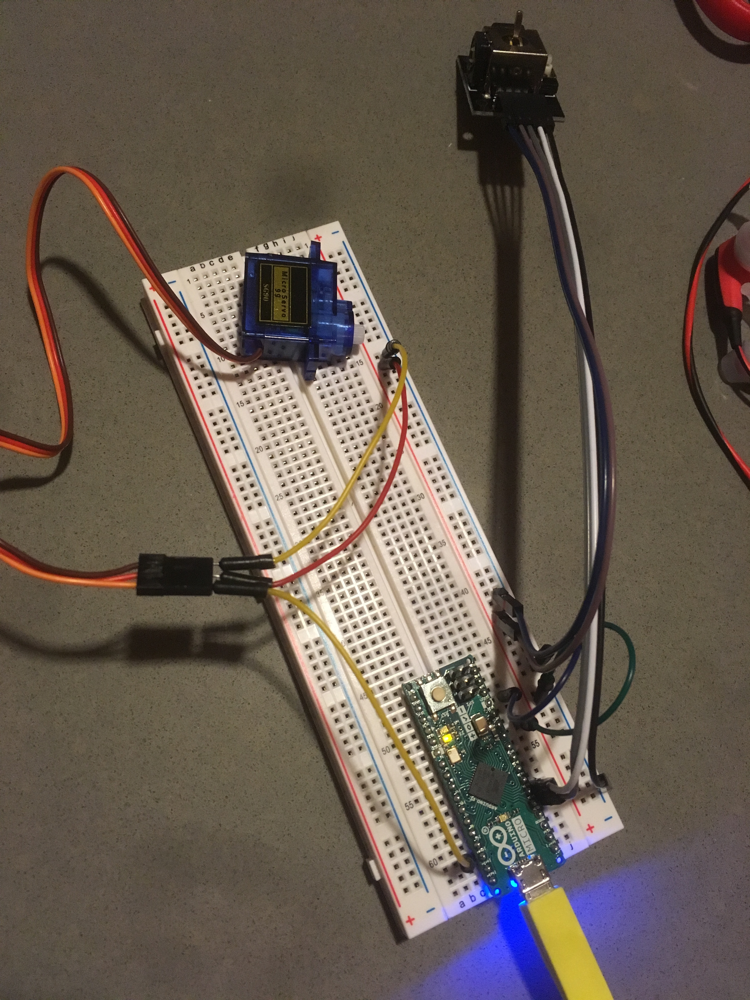

Motors!
Assignment: Create a circuit using a joystick to control a motor. Output motor position to Serial.
Image: Circuit
This circuit uses a joystick to control the servo motor. The angle of the motor is controlled by the horizontal position of the joystick.

Gif: Circuit Operation

Circuit Schematic

Code
//This project enables basic control of a servo motor using a joystick.
//Include necessary libraries
#include Servo.h
//Servo instance
Servo myServo;
//Variable for pin numbers
int joyPin1 = A1; // horizontal joystick pin
int joyPin2 = A2; // vertical joystick pin
int servoPin = 10;
//Variables for values
int horizontalVal = 0; // horizontal joystick value
int verticalVal = 0; // vertical joystick value
void setup() {
//Serial for debugging
Serial.begin(250000);
while (!Serial);
Serial.println("Serial on");
//Initialize servo with pin
myServo.attach(servoPin);
myServo.write(0);
}
void loop() {
// reads the horizontal joystick value
horizontalVal = analogRead(joyPin1);
// small delay between reading sensors
delay(100);
// reads the vertical joystick value (unused in this project)
verticalVal = analogRead(joyPin2);
//Map the horizontal position of the joystick to a new position
//for the servo. Josytick values range from 0 to 1024, servo
//accepts values from 0 to 180 degrees.
int servoPosition = map(horizontalVal,0,1024,0,180);
//Write new position to servo
myServo.write(servoPosition);
//Print values for debugging
Serial.println("Horizontal: " + String(horizontalVal));
Serial.println("Vertical: " + String(verticalVal));
Serial.println("Servo: " + String(myServo.read()));
//wait a little longer for servo to catch up
delay(200);
}